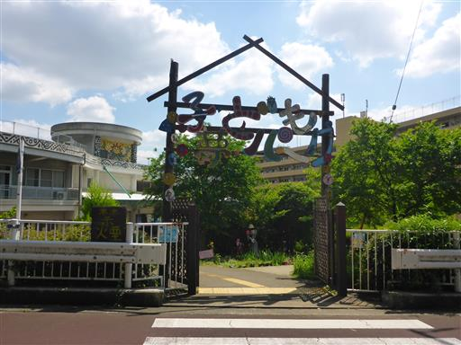
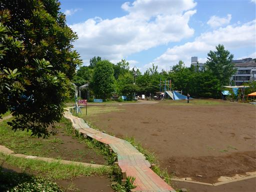
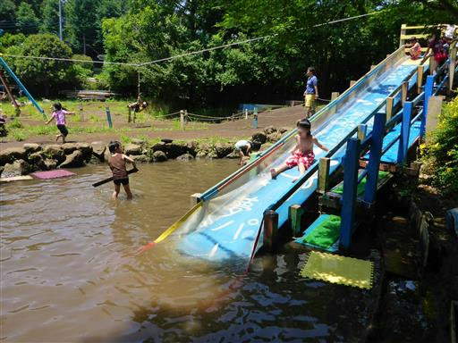
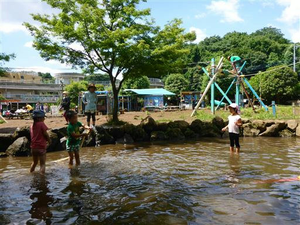
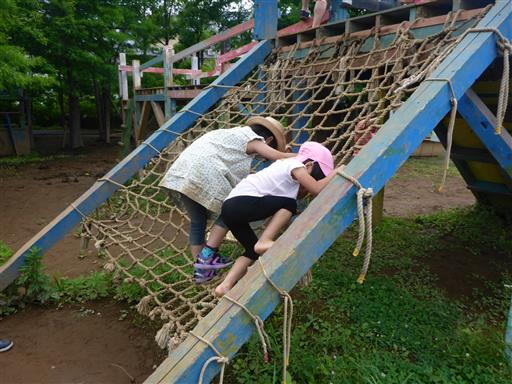
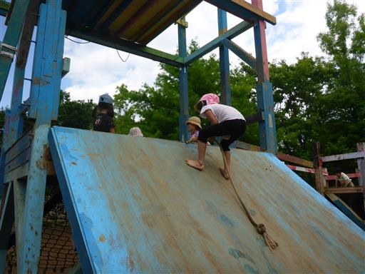
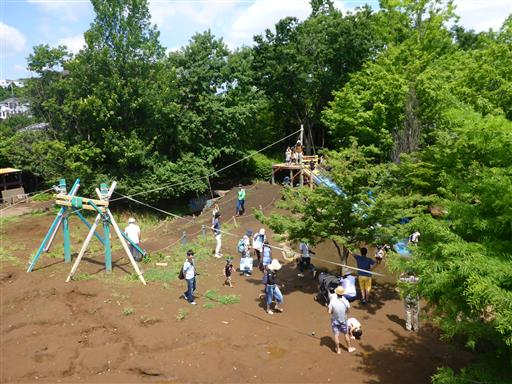
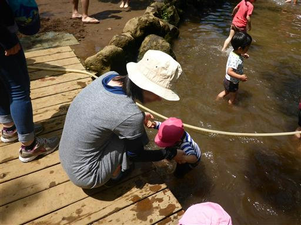
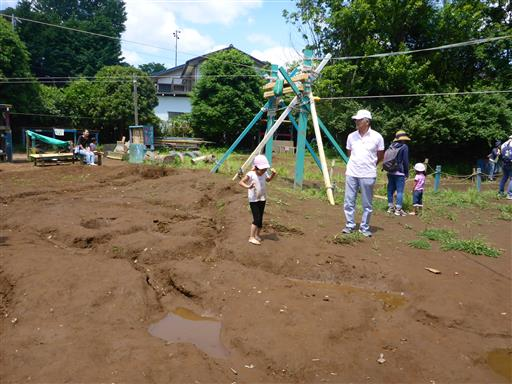
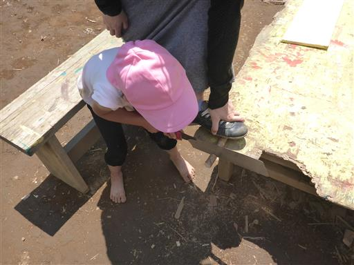

子ども夢パーク
| 日付 | 2015年6月7日（日） |
|---|---|
| メンバー | 家族（妻、長女・4歳、長男・1歳） |
| アクセス | 電車 |
川崎市にある子ども夢パークという施設に行く。
子供達が泥んこになって自由に遊べる場所だ。
子ども夢パーク入口。
駅から10分程度歩く必要があり、娘はグズグズで「何か欲しい」を繰り返している。

施設は無料。中に入るとようやく娘が元気になり走り出す。

ウォータースライダー。人気の遊具だ。

ウォータースライダーの先にある池。皆びしょ濡れだ。

ネットを登る。この施設にある遊具は基本的に手造りだ。

遊具は全体的に難しい。特に間隔の広い梯子は高度感があり、大人でも怖いぐらいだ。

園内を見下ろす。施設内は割と狭い。

最初は怖がっていた息子も、慣れてくると水に入って遊びだす。

地面のあちらこちらに穴が開いている。
穴を掘ったり、水を流したり、泥んこになって遊べる。

鋸で木を切る。娘は鋸の絵しか見たことが無く、初めて鋸を認識したようだ。

ログハウスに入って昼食をとる。
息子はロフトに至る梯子が気に入ったらしく、何度も登ったり下りたりしている。
少々狭いが、思いっきり体を動かせる良い施設だった。